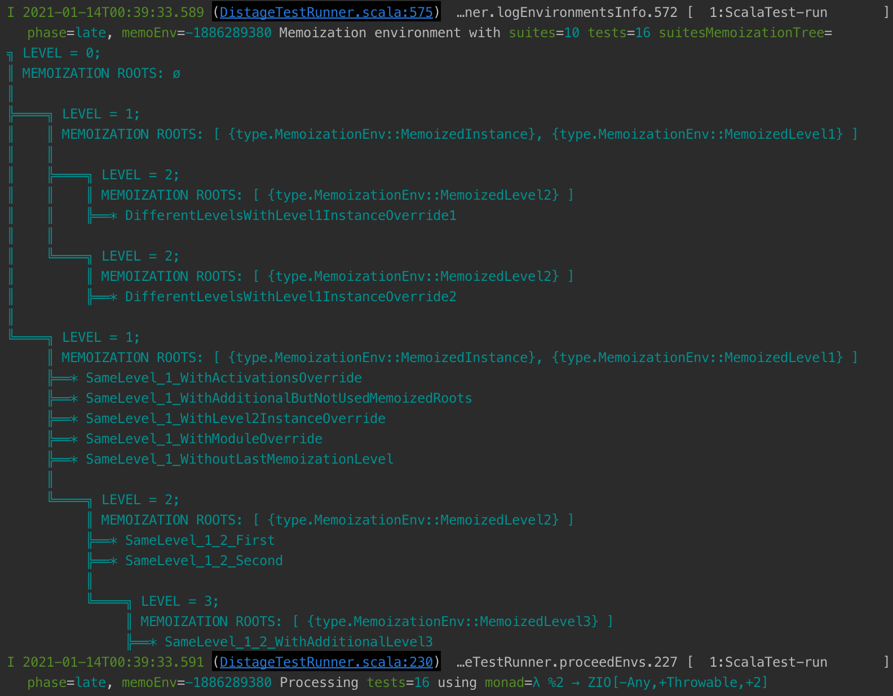

distage-testkit
Quick Start
distage-testkit simplifies pragmatic purely-functional program testing providing Spec* ScalaTest base classes for any existing Scala effect type with kind F[_], F[+_, +_], F[-_, +_, +_] or Identity. Specs provide an interface similar to ScalaTest’s WordSpec, however distage-testkit adds additional capabilities such as: first class support for effect types; dependency injection; and parallel execution.
Usage of distage-testkit generally follows these steps:
- Extend a base class corresponding to the effect type:
- No effect type -
SpecIdentity F[_]-Spec1[F], for monofunctors (cats.effect.IO,monix)F[+_, +_]-Spec2[F], for bifunctors (ZIO,monix-bio)F[-_, +_, +_]-Spec3[F]for trifunctors (ZIO)
- No effect type -
- Override
def config: TestConfigto customize theTestConfig - Establish test case contexts using
should,must, orcan. - Introduce test cases using one of the
inmethods. These test cases can have a variety of forms, from plain functions returning an assertion, to effectful functions with dependencies:- No effect type /
Identity-in inforF[_]inforF[+_, +_]inforF[-_, +_, +_]- Test cases dependent on injectables:
Functoid
- No effect type /
API Overview
The highest value tests to develop in our experience are those that verify the communication behavior of components. These are tests of blackbox interfaces, with atomic or group isolation levels.
To demonstrate usage of distage-testkit we’ll consider a hypothetical game score system. This system will have a model, logic, and service which we’ll then define test cases to verify. Our application will use ZIO[-R, +E, +A].
We’ll start with the following model and service interface for the game score system:
package app
import zio._
import zio.console.{Console, putStrLn}
final case class Score(
value: Int
)
final case class Config(
starValue: Int,
mangoValue: Int,
defaultBonus: Int,
)
trait BonusService {
def queryCurrentBonus: Task[Int]
def increaseCurrentBonus(delta: Int): Task[Int]
}
object Score {
val zero = Score(0)
def addStar(config: Config, score: Score) =
score.copy(value = score.value + config.starValue)
def echoConfig(config: Config): RIO[Has[Console.Service], Config] =
for {
_ <- putStrLn(config.toString)
} yield config
def addMango(config: Config, score: Score): RIO[Has[Console.Service] with Has[BonusService], Score] =
for {
bonusService <- RIO.service[BonusService]
currentBonus <- bonusService.queryCurrentBonus
} yield {
val value = score.value + config.mangoValue + currentBonus
score.copy(value = value)
}
}
This represents a game score system where the player can collect Stars or Mangoes with differently configured and calculated point values.
Spec Base Classes
There are test suite base classes for functor, bifunctor and trifunctor effect types. We will be choosing the one that matches our application’s effect type from the following:
- No effect type, imperative usage -
SpecIdentity F[_]-Spec1[F]F[+_, +_]-Spec2[F]F[-_, +_, +_]-Spec3[F]
The effect monad is expected to support sync and async effects. distage-testkit provides this support for Identity , monix, monix-bio, ZIO, and monads wth instances of cats-effect or BIO typeclasses. For our demonstration application, the tests will use the ZIO[-R, +E, +A] effect type. This means we’ll be using Spec3[ZIO] for the test suite base class.
The default config (super.config) has pluginConfig, which by default will scan the package the test is defined in for defined Plugin modules. See the distage-extension-plugins documentation for more information. For our demonstration the module will be provided using explicit moduleOverrides instead of classpath scanning, like so:
package app
import com.typesafe.config.ConfigFactory
import distage.ModuleDef
import izumi.distage.testkit.scalatest.{AssertZIO, Spec3}
abstract class Test extends Spec3[ZIO] with AssertZIO {
val defaultConfig = Config(
starValue = 10,
mangoValue = 256,
defaultBonus = 10,
)
override def config = super
.config.copy(
moduleOverrides = new ModuleDef {
make[Config].from(defaultConfig)
},
debugOutput = true,
)
}
Test Cases
In WordSpec, a test case is a sentence (a String) followed by in then the body. In distage-testkit the body of the test case is not limited to a function returning an assertion.
Functions that take arguments and functions using effect types are also supported. Function arguments and effect environments will be provided according to the distage object graph created from the modules defined in def config: TestConfig.
Assertions
All of the base classes support test cases that are:
- Assertions.
- Functions returning an assertion.
- Functions returning unit that fail on exception.
These are introduced using in from DistageAbstractScalatestSpec.LowPriorityIdentityOverloads
The assertion methods are the same as ScalaTest as the base classes extend ScalaTest Assertions.
Let’s now create a simple test for our demonstration application:
package app
class ScoreSimpleTest extends Test {
"Score" should {
"increase by config star value" in {
val starValue = util.Random.nextInt()
val mangoValue = util.Random.nextInt()
val defaultBonus = util.Random.nextInt()
val config = Config(starValue, mangoValue, defaultBonus)
val expected = Score(starValue)
val actual = Score.addStar(config, Score.zero)
assert(actual == expected)
}
// Use `Config` from the module in the `Test` class above
"increase by config star value from DI" in {
config: Config =>
val expected = Score(defaultConfig.starValue)
val actual = Score.addStar(config, Score.zero)
assert(actual == expected)
}
}
}
ScoreSimpleTest:
- Score should increase by config star value
- Score should increase by config star value from DI
- Score should increase by config star value from DI
Assertions with Effects
All of the base classes support test cases that are effects with assertions. Functions returning effects will have arguments provided from the object graph. These test cases are supported by in from DSWordSpecStringWrapper.
The different effect types fix the F[_] argument for this syntax:
Spec1:F[_]Spec2:F[Throwable, _]Spec3:F[Any, Throwable, _]
With our demonstration application we’ll use this to verify the Score.echoConfig method. The Config required is from the distage object graph defined in moduleOverrides. By using a function with a Config argument in in, the required argument will be injected by distage-testkit.
package app
class ScoreEffectsTest extends Test {
"testkit operations with effects" should {
"support assertions in effects" in {
(config: Config) =>
for {
actual <- Score.echoConfig(config)
_ <- assertIO(actual == config)
} yield ()
}
"support assertions outside of effect" in {
(config: Config) =>
for {
actual <- Score.echoConfig(config)
} yield {
assert(actual == config)
}
}
}
}
ScoreEffectsTest:
Config(10,256,10)
Config(10,256,10)
- testkit operations with effects should support assertions outside of effect
- testkit operations with effects should support assertions outside of effect
- testkit operations with effects should support assertions in effects
- testkit operations with effects should support assertions in effects
Assertions with Effects with Environments
The in method for F[_, _, _] effect types supports injection of environments from the object graph in addition to simple assertions and assertions with effects.
A test that verifies the BonusService in our demonstration would be:
package app
abstract class BonusServiceTest extends Test {
"BonusService" should {
"initially use default bonus as current" in {
for {
bonusService <- ZIO.service[BonusService]
currentBonus <- bonusService.queryCurrentBonus
_ <- putStrLn(s"currentBonus = $currentBonus")
_ <- assertIO(currentBonus == defaultConfig.defaultBonus)
} yield ()
}
"increment by delta" in {
for {
delta <- zio.random.nextInt
bonusService <- ZIO.service[BonusService]
initialBonus <- bonusService.queryCurrentBonus
actualBonus <- bonusService.increaseCurrentBonus(delta)
expectedBonus = initialBonus + delta
_ <- assertIO(actualBonus == expectedBonus)
} yield ()
}
}
}
The ZIO Has injection support extends to the test cases, here we request two components implicitly using the ZIO environment:
BonusService- is requested byZIO.service[BonusService]zio.Random.Service- is requested byzio.random.nextInt
While this compiles just fine, this test cannot be run without the object graph containing a BonusService component!
Our demonstration application includes dummy and production implementations for BonusService. For each implementation, we define a ZManaged value describing how to create and finalize it. After adding implementations for BonusService component using these ZManaged’s as constructors, our test cases will be able to use the component BonusService.
package app
object DummyBonusService {
class Impl(
bonusState: Ref[Int]
) extends BonusService {
override def queryCurrentBonus: UIO[Int] = {
bonusState.get
}
override def increaseCurrentBonus(delta: Int): UIO[Int] = {
bonusState.updateAndGet(_ + delta)
}
}
val acquire: Task[DummyBonusService.Impl] = for {
ref <- Ref.make(10)
impl = new Impl(ref)
} yield impl
val release: UIO[Unit] = UIO.unit
val managed: TaskManaged[DummyBonusService.Impl] =
acquire.toManaged(_ => release)
}
This dummy implementation is useful for verification in both automated tests and functional prototypes.
For a real system we might build a production implementation like the following. This hypothetical implementation would perform an HTTP request to a REST service. We’ll introduce a production service, but this actual query will be unimplemented for our demonstration:
package app
object ProdBonusService {
class Impl(
console: Console.Service,
url: String,
) extends BonusService {
override def queryCurrentBonus = for {
_ <- console.putStrLn(s"querying $url")
} yield ???
override def increaseCurrentBonus(delta: Int) = for {
_ <- console.putStrLn(s"post to $url")
} yield ???
}
val acquire: RIO[Has[Console.Service], ProdBonusService.Impl] = for {
console <- ZIO.service[Console.Service]
impl = new Impl(console, "https://my-bonus-server/current-bonus.json")
} yield impl
val release: UIO[Unit] = UIO.unit
val managed: RManaged[Has[Console.Service], ProdBonusService.Impl] =
acquire.toManaged(_ => release)
}
Pattern: Dual Test Tactic
The testing of BonusService in our demonstration application will follow the Dual Test Tactic. See our blog post Unit, Functional, Integration? You are doing it wrong for a discussion of test taxonomy and the value of this tactic.
A binding for the implementation of BonusService must be passed to distage, to be able to build a Has[BonusService] to inject into the ZIO environment of the test.
But note that we have two implementations, to use both one option is to define separate modules for the dummy and production implementations. One module would be used by tests and the other only by production.
However, this is not as declaring both implementations in our modules at the same time but with different activations.
Our demonstration application will use the StandardAxis.Repo Dummy and Prod axis tags:
package app
import distage.plugins.PluginDef
import distage.Activation
import distage.StandardAxis.Repo
object BonusServicePlugin extends PluginDef {
make[BonusService]
.fromHas(DummyBonusService.managed)
.tagged(Repo.Dummy)
make[BonusService]
.fromHas(ProdBonusService.managed)
.tagged(Repo.Prod)
}
Here we used ZIO Has injection .fromHas to supply the environment dependencies for ProdBonusService.managed, namely Has[Console.Service]. (Implementation for Console.Service is provided by default from ZIOSupportModule) .fromHas can be used with ZLayer, ZManaged ZIO or any F[-_, +_, +_]: Local3 (from BIO typeclasses).
Note that the BonusServicePlugin is not explicitly added to the Test.config: But, this PluginDef class is defined in the same package as the test, namely in app. By default the pluginConfig for the test will include the test’s package, which will be scanned by distage for PluginDef instances.
Continuing with the pattern, a trait will control which implementation is activated:
package app
trait DummyTest extends Test {
override def config = super
.config.copy(
activation = Activation(Repo -> Repo.Dummy)
)
}
trait ProdTest extends Test {
override def config = super
.config.copy(
activation = Activation(Repo -> Repo.Prod)
)
}
With these, a production test and a dummy test can be introduced for the demonstration game score application. Note how these share the same test code, in BonusServiceTest and differ only in activations.
When extended beyond this small example, this pattern simplifies system level tests, sanity checks, and even a pragmatic form of N-Version Programming:
package app
class ProdBonusServiceTest extends BonusServiceTest with ProdTest
class DummyBonusServiceTest extends BonusServiceTest with DummyTest
DummyBonusServiceTest:
currentBonus = 10
- BonusService should initially use default bonus as current
- BonusService should initially use default bonus as current
- BonusService should increment by delta
- BonusService should increment by delta
Test Case Context
The testkit ScalaTest base classes include the following verbs for establishing test context:
Configuration
The test suite class for your application should override the def config: TestConfig attribute.
config defines plugin configuration, memoization, module overrides and other options.
See also:
Syntax Reference
For F[_], including Identity:
in { assert(???) }: The test case is a function returning an assertion.in { (a: A, b: B) => assert(???) }: The test case is a function returning an assertion. Theaandbwill be injected from the object graph.in { (a: A, b: B) => ???: F[Unit] }: The test case is a function returning an effect to be executed. Theaandbwill be injected from the object graph. The test case will fail if the effect fails.in { (a: A, b: B) => ???: F[Assertion] }: The test case is a function returning an effect to be executed. Theaandbwill be injected from the object graph. The test case will fail if the effect fails or produces a failure assertion.
For F[-_, +_, +_], it’s same with F[Any, _, _]:
in { ???: F[zio.Has[C] with zio.Has[D], _, Unit] }: The test case is an effect requiring an environment. The test case will fail if the effect fails. The environment will be injected from the object graph.in { ???: F[zio.Has[C] with zio.Has[D], _, Assertion] }: The test case is an effect requiring an environment. The test case will fail if the effect fails or produces a failure assertion. The environment will be injected from the object graph.in { (a: A, b: B) => ???: F[zio.Has[C] with zio.Has[D], _, Assertion] }: The test case is a function producing an effect requiring an environment. All ofa: A,b: B,Has[C]andHas[D]will be injected from the object graph.
Provided by trait AssertZIO:
assertIO(_: Boolean): zio.ZIO[Any, Nothing, Assertion]
Provided by trait AssertMonix:
assertIO(_: Boolean): monix.eval.Task[Assertion]
Provided by trait AssertCIO:
assertIO(_: Boolean): cats.effect.IO[Assertion]
Provided by trait AssertIO2:
assertBIO[F[+_, +_]: IO2](_: Boolean): F[Nothing, Assertion]
Provided by trait AssertSync:
assertIO[F[_]: Sync](_: Boolean): F[Assertion]
Execution Order
By default, tests are executed in parallel. This includes tests using ZIO, monix, cats.effect.IO, or any effect type with BIO or cats-effect typeclass instances. Identity is treated as an effect type for imperative code.
Interoperability with all existing Scala effect types is provided by implicit instances of QuasiIO, QuasiAsync , and QuasiIORunner. These components will be provided to the application automatically via DefaultModule, but may be overridden by user bindings if different behavior or support for custom effect types is required.
The execution of tests is grouped into:
- memoization levels.
- test suite
- test cases
The default is to run all of these in parallel.
The TestConfig has options to change the behavior for each of these groups. The default is ParallelLevel.Unlimited which does not constrain the number of parallel tests. ParallelLevel.Fixed(n: Int) limits the execution to at most n test cases. While ParallelLevel.Sequential executes the test cases one at a time.
parallelEnvs- Parallelism level for distinct memoization environments.parallelSuites- Parallelism level for test suites.parallelTests- Parallelism level for test cases.
If a group is configured to execute sequentially this will execute after the parallel tests.
For example, the BonusServiceTest above consists of two test cases and one test suite. Both test cases will be executed in parallel using the capabilities of the effect type.
The NotUsingMemoTest and UsingMemoTest test suites below demonstrate executing the test cases sequentially for each test suite. However, the two suites themselves will execute in parallel as they are in the same memoization environment.
Resource Reuse - Memoization
For each test, a new object graph with injected values is created. Without using memoization, all components will be created, acquired and released anew for each test case. This may be unwanted. For example, you may wish to reuse a single PostgreSQL container for a sequence of test cases. In which case the PostgreSQL component should be memoized for the duration of those test cases.
Configuring memoization determines whether summoning a component results in a fresh component or reuses an existing, memoized, instance.
Further, the memoization environment determines how the test cases are scheduled for execution. See the execution order section for further information.
Memoization Environments
Memoization strategy applied when a component is summoned is defined by the memoization environment. Each distinct memoization environment uses a distinct memoization store. When a component instance is memoized that instance is shared across all tests that use the same memoization environment. TestConfig contains the options that define the memoization environment:
memoizationRoots- These components will be acquired once and shared across all tests that used the same memoization environment.activation- Chosen activation axis. Differences in Activation that affect the memoized part of the graph (that alter implementations of components inmemoizationRootsor their transitive dependencies) will cause the test to execute in a new memoization environment.pluginConfig- Defines the plugins to source module definitions.forcedRoots- Components treated as a dependency of every test. A component added both toforcedRootsandmemoizationRootswill be acquired at the start of all tests and released at the end of all tests in the memoization environment.moduleOverrides- Overrides the modules frompluginConfig.
The module environment depends on instantiation of the memoizationRoots components. Changes to the config that alter implementations of these components or their dependencies will change the memoization environment used. This includes, but is not limited to, changes to activation, pluginConfig and moduleOverrides.
When the TestConfig option debugOutput is true the debug output will include memoization environment diagnostics. This can also be controlled using the izumi.distage.testkit.debug system property.
Memoization Levels
Since version 1.0 the above memoization environments scheme has been generalized to support unlimited nesting of memoization environments.
Nested memoization levels allow more and better sharing of heavy components among test suites. With previous strategy of single-level memoization environments, any change in TestConfig that forces a new memoization environment would cause every single memoized component to be recreated in a new environment.
With new strategy, the memoization environment may be manually partitioned into levels and if a change in TestConfig does not cause a divergence at one of the levels, the nested levels may then fully reuse the object sub-graph of all parent levels that do not diverge.
For clarity, the memoization tree structure is printed before test runs. For example, a memoization tree of a project with the following test suites:
class SameLevel_1_WithActivationsOverride extends Spec3[ZIO] {
override protected def config: TestConfig = {
super.config.copy(
memoizationRoots = Map(
1 -> Set(DIKey[MemoizedInstance], DIKey[MemoizedLevel1]),
2 -> Set(DIKey[MemoizedLevel2]),
),
)
}
}
class SameLevel_1_2_WithAdditionalLevel3 extends SameLevel_1_WithActivationsOverride {
override protected def config: TestConfig = {
super.config.copy(
memoizationRoots =
super.config.memoizationRoots ++
Set(DIKey[MemoizedLevel3]),
)
}
}
May be visualized as follows:

Technical note: divergence of memoization levels is calculated based on equality of recipes of future object graphs, not equality of allocated/existing object graphs.
Note: original github ticket
Examples
The first example will acquire the BonusService for each test case. This will not use memoization.
package app
import izumi.distage.testkit.TestConfig
class NotUsingMemoTest extends DummyTest {
override def config = super
.config.copy(
// this demo requires the tests to run sequentially
parallelTests = TestConfig.ParallelLevel.Sequential
)
"Not memoizing BonusService" should {
"use a new instance in the first case" in {
val delta = util.Random.nextInt()
for {
bonusService <- ZIO.service[BonusService]
_ <- console.putStrLn(s"\n bonusService = ${bonusService} \n")
// change the bonus service state
currentBonus <- bonusService.increaseCurrentBonus(delta)
expectedBonus = defaultConfig.defaultBonus + delta
_ <- assertIO(currentBonus == expectedBonus)
} yield ()
}
"use a new instance in the second case" in {
for {
bonusService <- ZIO.service[BonusService]
_ <- console.putStrLn(s"\n bonusService = ${bonusService} \n")
currentBonus <- bonusService.queryCurrentBonus
// verify the state is unchanged from default
_ <- assertIO(currentBonus == defaultConfig.defaultBonus)
} yield ()
}
}
}
These two tests will run sequentially. There is no memoization configured for the dependencies. Each test case will acquire a fresh instance from the object graph. For our demonstration this results in a new BonusService instance for each test case.
NotUsingMemoTest:
bonusService = repl.MdocSession$App$DummyBonusService$Impl@2ab6f9f2
- Not memoizing BonusService should use a new instance in the first case
- Not memoizing BonusService should use a new instance in the first case
bonusService = repl.MdocSession$App$DummyBonusService$Impl@5d50bca7
- Not memoizing BonusService should use a new instance in the second case
- Not memoizing BonusService should use a new instance in the second case
Configuring the test to memoize BonusService will result in the same instance being used for both test cases:
package app
import distage.DIKey
class UsingMemoTest extends DummyTest {
override def config = super
.config.copy(
memoizationRoots = super.config.memoizationRoots ++ Set(DIKey[BonusService]),
// this demo requires the test cases to run sequentially
parallelTests = TestConfig.ParallelLevel.Sequential
)
val delta = util.Random.nextInt()
"Memoizing BonusService" should {
"use a new instance in the first case" in {
for {
bonusService <- ZIO.service[BonusService]
_ <- console.putStrLn(s"\n bonusService = ${bonusService} \n")
// change the bonus service state
currentBonus <- bonusService.increaseCurrentBonus(delta)
expectedBonus = defaultConfig.defaultBonus + delta
_ <- assertIO(currentBonus == expectedBonus)
} yield ()
}
"use the same instance in the second case" in {
for {
bonusService <- ZIO.service[BonusService]
_ <- console.putStrLn(s"\n bonusService = ${bonusService} \n")
currentBonus <- bonusService.queryCurrentBonus
expectedBonus = defaultConfig.defaultBonus + delta
// verify the change in the first case modified this bonusService
_ <- assertIO(currentBonus == expectedBonus)
} yield ()
}
}
}
The memoization roots include BonusService. This results in the same BonusService instance for each test case.
This test requires the effect of the first test case to occur prior to the second test case. As discussed Execution Order section: Without configuring test cases for sequential execution this order would not be guaranteed.
Note that this test will not use the same BonusService instance as NotUsingMemoTest. The configs for these test have different memoization roots. This results in different memoization environments.
If the memoization environments are equal then the components will be shared.
For our example, any other test suite with the same memoization environment will share the same BonusService instance:
package app
class AnotherUsingMemoTest extends DummyTest {
// This is the same memoization environment even tho the config is declared separately
override def config = super
.config.copy(
memoizationRoots = super.config.memoizationRoots ++ Set(DIKey[BonusService]),
// this demo requires the test cases to run sequentially
parallelTests = TestConfig.ParallelLevel.Sequential
)
"Another test using BonusService" should {
"use the same instance" in {
for {
bonusService <- ZIO.service[BonusService]
_ <- console.putStrLn(s"\n bonusService = ${bonusService} \n")
currentBonus <- bonusService.queryCurrentBonus
_ <- console.putStrLn(s"currentBonus = ${currentBonus}")
} yield ()
}
}
}
Both tests suites, all three test cases, will use same memoization environment and the same bonusService instance:
UsingMemoTest:
bonusService = repl.MdocSession$App$DummyBonusService$Impl@35c3c20c
bonusService = repl.MdocSession$App$DummyBonusService$Impl@35c3c20c
currentBonus = 10
- Memoizing BonusService should use a new instance in the first case
- Memoizing BonusService should use a new instance in the first case
bonusService = repl.MdocSession$App$DummyBonusService$Impl@35c3c20c
- Memoizing BonusService should use the same instance in the second case
- Memoizing BonusService should use the same instance in the second case
AnotherUsingMemoTest:
- Another test using BonusService should use the same instance
- Another test using BonusService should use the same instance
Pseudocode
Suppose that the lookup of an instance for a component uses a hypothetical function lookup(graph, type and tag). This function is memoized using storage specific to the current memoization environment. This memoization environment is uniquely defined by the test config options above. This would have pseudocode like:
rootComponents = planRoots(memoizationRoots, activation, forcedRoots, ...)
memoizationEnvironment = getOrCreate(rootComponents)
memoizationStore = memoizationEnvironment.store
...
for each test case
add forcedRoots to component dependencies
for each component dependency:
if memoizationStore contains component
then
instance = memoizationStore.lookup(component)
else
instance = acquireComponent(component)
if (component is in memoizationRoot paths)
memoizationStore.add(component, instance)
...
Forced Roots
forcedRoots field of TestConfig specifies components to synthetically add to the dependencies of every test within this test suite / memoization environment.
If forced root components are not memoized, they will be acquired and released for each test case.
If memoized, they will be acquired and released once, before all and after all the tests within this memoization environment.
They provide an alternative to ScalaTest’s native beforeEach/beforeAll that can use functional effects instead of mutability (However, All here includes the entire memoization environment, not the enclosing test suite)
Forced roots may be configured per-activation / combination of activations, e.g. you may force postgres table setup to happen only in test environments with Repo -> Repo.Prod activation.
Test Selection
Using IntegrationCheck
Implementation classes that inherit from izumi.distage.framework.model.IntegrationCheck will have their resourceCheck() method called before the test instantiation to check if external test dependencies — such as Docker containers in distage-framework-docker — are available for the test (or for the role when in main scope).
If not, the test will be canceled/ignored.
This feature therefore allows you to selectively run only the fast in-memory tests that have no external dependencies by shutting down the docker daemon (or another source of external dependencies).
Integration checks are executed only in distage-testkit tests and distage-framework roles.
References
- distage Example Project project shows how to use
distage,distage-testkit&distage-framework-docker - Video for Hyper-pragmatic Pure FP Testing with distage-testkit – is an overview of the concepts, design and usage.
- Slides for Hyper-pragmatic Pure FP testing with distage-testkit
- Slides for Scala, Functional Programming and Team Productivity
- 7mind blog Constructive Test Taxonomy
- N-Version Programming
Extended Example
This is an excerpt from distage-example, specifically the tests source. Techniques in that example to look for:
- Placing the
Profilescomponent in thememoizationRoots. The axisRepo.Produses a PostgreSQL docker container. This is shared across test cases since theProfiles[IO]depends on the PostgreSQL connection which then depends on the container instance. - Use of
Scene.Managedto useRepo.Prodcomponents in a managed environment.
You may also take other projects’ test suites written with distage-testkit as reference:
import distage.{Activation, DIKey, ModuleDef}
import distage.StandardAxis.{Scene, Repo}
import distage.plugins.PluginConfig
import izumi.distage.testkit.TestConfig
import izumi.distage.testkit.scalatest.{AssertZIO, Spec3}
import leaderboard.model.{Score, UserId}
import leaderboard.repo.{Ladder, Profiles}
import leaderboard.zioenv.{ladder, rnd}
import zio.{ZIO, IO}
abstract class LeaderboardTest extends Spec3[ZIO] with AssertZIO {
override def config = TestConfig(
pluginConfig = PluginConfig.cached(packagesEnabled = Seq("leaderboard.plugins")),
moduleOverrides = new ModuleDef {
make[Rnd[IO]].from[Rnd.Impl[IO]]
},
// For testing, setup a docker container with postgres,
// instead of trying to connect to an external database
activation = Activation(Scene -> Scene.Managed),
// Instantiate Ladder & Profiles only once per test-run and
// share them and all their dependencies across all tests.
// this includes the Postgres Docker container above and table DDLs
memoizationRoots = Set(
DIKey[Ladder[IO]],
DIKey[Profiles[IO]],
),
configBaseName = "leaderboard-test",
)
}
trait DummyTest extends LeaderboardTest {
override final def config = super.config.copy(
activation = super.config.activation ++ Activation(Repo -> Repo.Dummy)
)
}
trait ProdTest extends LeaderboardTest {
override final def config = super.config.copy(
activation = super.config.activation ++ Activation(Repo -> Repo.Prod)
)
}
final class LadderTestDummy extends LadderTest with DummyTest
final class LadderTestPostgres extends LadderTest with ProdTest
abstract class LadderTest extends LeaderboardTest {
"Ladder" should {
// this test gets dependencies through arguments
"submit & get" in {
(rnd: Rnd[IO], ladder: Ladder[IO]) =>
for {
user <- rnd[UserId]
score <- rnd[Score]
_ <- ladder.submitScore(user, score)
res <- ladder.getScores.map(_.find(_._1 == user).map(_._2))
_ <- assertIO(res contains score)
} yield ()
}
// other tests get dependencies via ZIO Env:
"assign a higher position in the list to a higher score" in {
for {
user1 <- rnd[UserId]
score1 <- rnd[Score]
user2 <- rnd[UserId]
score2 <- rnd[Score]
_ <- ladder.submitScore(user1, score1)
_ <- ladder.submitScore(user2, score2)
scores <- ladder.getScores
user1Rank = scores.indexWhere(_._1 == user1)
user2Rank = scores.indexWhere(_._1 == user2)
_ <- if (score1 > score2) {
assertIO(user1Rank < user2Rank)
} else if (score2 > score1) {
assertIO(user2Rank < user1Rank)
} else IO.unit
} yield ()
}
// you can also mix arguments and env at the same time
"assign a higher position in the list to a higher score 2" in {
ladder: Ladder[IO] =>
for {
user1 <- rnd[UserId]
score1 <- rnd[Score]
user2 <- rnd[UserId]
score2 <- rnd[Score]
_ <- ladder.submitScore(user1, score1)
_ <- ladder.submitScore(user2, score2)
scores <- ladder.getScores
user1Rank = scores.indexWhere(_._1 == user1)
user2Rank = scores.indexWhere(_._1 == user2)
_ <- if (score1 > score2) {
assertIO(user1Rank < user2Rank)
} else if (score2 > score1) {
assertIO(user2Rank < user1Rank)
} else IO.unit
} yield ()
}
}
}